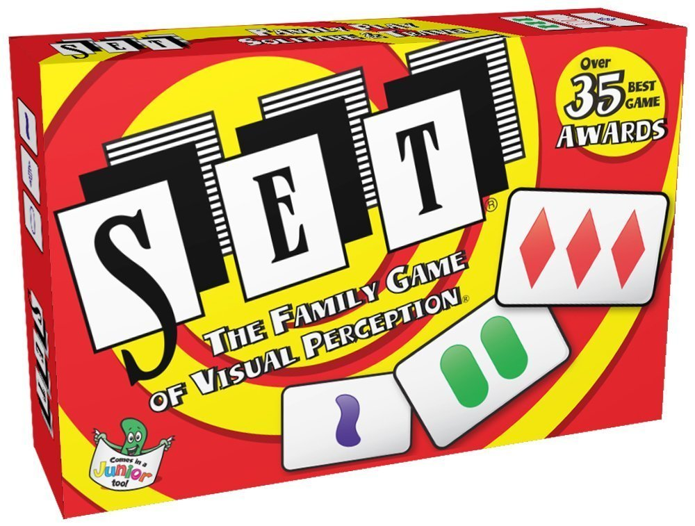

Welcome to our Homepage!
Ready, SET, Code! – by Andy Ly

Absract:
While the idea behind the game of Set is fairly simple, there is also a complexity behind the game mechanics that tests one’s understanding of algorithmic decision making.
The game operates on two key rewards of speed and accuracy. Essentially when playing the game, we are asking our minds to focus on identifying patterns quickly and correctly of the cards presented before us.A similar comparison can be drawn if we examine what we ask of computers to do for us every day.
We use fingerprint scanning, facial recognition and passwords for security/authentication purposes.
We use search engines to return results most accurately matching our query. We use social media sites to find people by their names and common connections.
In a technological golden age fueled by information, the way we store and process that data becomes increasingly important.
Question:
What is SET?
Answer:
Set is basically a game of pattern recognition. How fast a player can identify a set from the available cards will determine the winner of the game.
Rules:
A “Set” is comprised of 3 cards that have either all different in all characteristics OR all share only one common distinct characteristic.
- Cards have essentially four characteristics: Number, Shape, Color, and Filling and there are no duplicate cards.
- Once a player has identified a set, they pick up the cards and add them to their set collection. Then new cards from the deck are added to the array to replace the cards that are picked up.
- Each set is worth one point. If a player misidentifies a set, they are penalized one point.
- If there are no possible sets in an array, additional cards may be added until a set can be made. The game is over when either the deck is exhausted or no further sets can be made.
- The player with the most “sets” wins the game.
In our SET project, we have written a piece of code that if given the necessary information, can identify a set faster than a human can. The idea is that instead of teaching our mind to react faster to recognize patterns, we want to teach a machine how to analyze patterns and optimize the decision making logic to operate quicker than a human brain can process the information.
@JamesFyfe has developed an internalized Set Detector using Java. Where the computer would generate twelve random cards objects. Each card object is then assigned a set of values that indicate the card’s four given characteristics. The program will then compare the values of all cards and then identify sets if the values assigned to the cards indicate a set (see Rules). He has the source code posted on Repl (an online development environment), which can run the Java code natively in most browsers.
Set Detector by James Fyfe